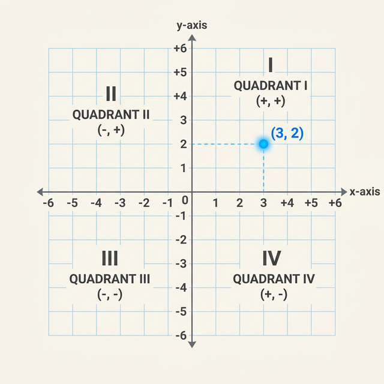

The xy-Plane & Coordinates
Every line, parabola, and circle on the SAT lives here. Master the navigation of the coordinate plane first.
The Cartesian Coordinate System

The xy-plane is formed by two perpendicular number lines:
- 👉 x-axis: The horizontal number line.
- 👉 y-axis: The vertical number line.
- 👉 Origin (0,0): Where the two axes intersect.
The Four Quadrants
The axes divide the plane into four regions called Quadrants. They are numbered counter-clockwise starting from the top-right.
Right & Up
Left & Up
Left & Down
Right & Down
Ordered Pairs: (x, y)
To locate any point, we use an ordered pair of numbers called coordinates.
- 1. Start at the **Origin (0,0)**.
- 2. Move **right 3 units** (x = 3).
- 3. Move **down 2 units** (y = -2).
💡 Tip: X always comes before Y. Just like in the alphabet!